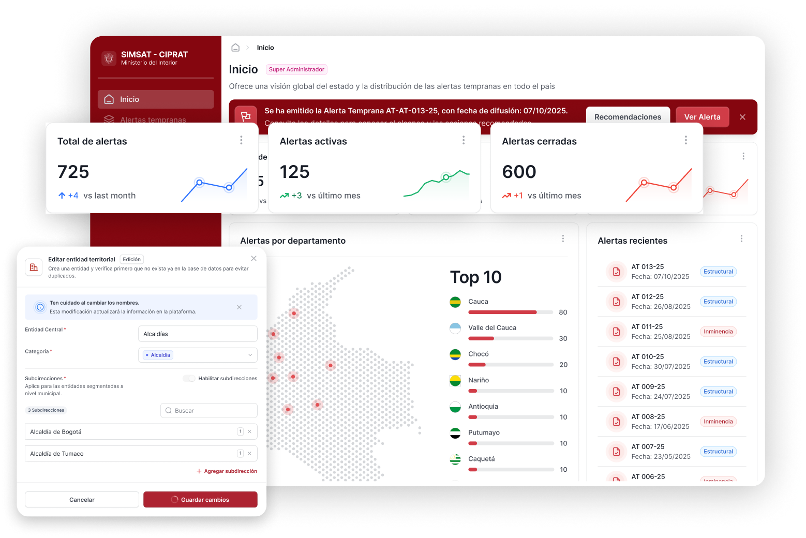

Acceso a la plataforma
Activación de la cuenta, inicio de sesión con código de verificación y perfil.
Centro de ayuda · SI-CIPRAT
Aprende paso a paso lo que necesitas hacer en SI-CIPRAT según el rol que te asignaron.

Rutas de aprendizaje
Elige el rol que te asignaron. Verás qué puedes hacer, cómo hacerlo y cómo saber que ya lo dominas.
Contexto de plataforma
SI-CIPRAT es el Sistema de Información de la Comisión Intersectorial para la Respuesta Rápida a las Alertas Tempranas del Ministerio del Interior de Colombia. Allí se gestiona cada alerta, desde que se registra hasta que se cierra su plan de acción.
Cada persona ve la información que le corresponde según su alcance: nacional, macrozona, departamento, entidad central o subdirección.
Cómo avanza una alerta
Antes de la primera alerta, el Ministerio prepara la plataforma: crea las entidades e invita a los usuarios. Desde ahí, cada alerta sigue este camino.
Defensoría del Pueblo · Ministerio del Interior
La Defensoría emite la alerta y sus recomendaciones. El Ministerio la registra en SI-CIPRAT y asigna cada recomendación a una entidad responsable.
SI-CIPRAT
El sistema envía un correo a cada entidad con la recomendación que le corresponde y la deja lista en su plan de acción.
Entidad territorial · Monitor · Líder de Macrozona
La entidad formula actividades para cada recomendación. El Monitor o el Líder de Macrozona las revisa, las aprueba y confirma el plan.
Entidad territorial · Monitor · Líder de Macrozona
La entidad reporta cada seis meses la ejecución de sus actividades, con soportes. El Monitor o el Líder de Macrozona aprueba cada informe.
Ministerio del Interior · Defensoría del Pueblo
El Ministerio consolida el avance. La Defensoría emite informes de seguimiento u oficios de consumación, que se cargan en SI-CIPRAT hasta el cierre de la alerta.
Mapa de contenidos
Tu ruta por rol indica cuáles de estos módulos puedes consultar, gestionar o aprobar.
Activación de la cuenta, inicio de sesión con código de verificación y perfil.
Indicadores, alertas recientes, avance global y mapa de municipios.
Invitaciones, usuarios, roles, entidades y subdirecciones.
Lectura asistida de documentos para crear alertas en borrador.
Registro, consulta, edición, cierre e historial de las alertas.
Recomendaciones de cada alerta y sus entidades responsables.
Actividades que formulan las entidades para cada recomendación.
Revisión, aprobación y confirmación de planes e informes de ejecución.
Consolidado de las recomendaciones y su avance.
Consultas de ejecución y carga de reportes para aprobación.
Informes formales de seguimiento a las alertas.
Oficios que registran la consumación del riesgo.
Historial de actividad de las alertas de tu alcance.
Recordatorios y vencimientos que el sistema revisa cada día.